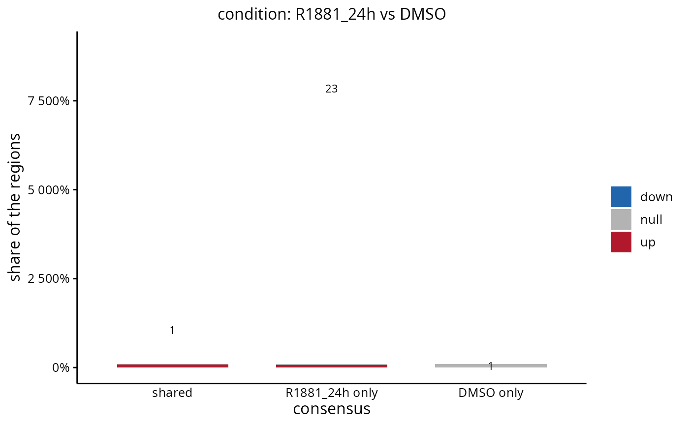

Draws the table of peakOccupancyTable as stacked bars, one per occupancy class, split by the direction of the change.
Usage
plotPeakOccupancy(
results,
contrast = NULL,
groups = NULL,
by = "group",
set = NULL,
FDR = NULL,
log2FC = NULL,
proportion = FALSE,
showCounts = TRUE,
colours = NULL,
title = NULL,
subtitle = NULL,
legendPosition = "right",
baseSize = 12,
returnData = FALSE
)Arguments
- results
RegionSetDE.resultsobject, or aRegionSetDE.resultsListtogether withcontrast.- contrast
String with the name of a contrast, or its position, when
resultsholds several of them. Default:NULL.- groups
Character vector with the consensus groups the regions are classified by. Default:
NULL, the two groups the contrast compares when they are among them, every group otherwise.- by
String indicating what the regions are grouped by, either
"group"or"samples". Default:"group".- set
Character vector with the names of the region sets kept. Default:
NULL, all of them.- FDR
Numeric value with the adjusted p-value below which a region counts as changed. Default:
NULL, the threshold the test was run with.- log2FC
Numeric value with the log2 fold change a region must reach. Default:
NULL, the threshold the test was run with.- proportion
Logical value to indicate whether the bars must be scaled to the same height, showing the composition of each class rather than its size. Default:
FALSE.- showCounts
Logical value to indicate whether the number of regions must be written on the bars. Default:
TRUE.- colours
Named character vector with the colours of
down,nullandup. Default:NULL, the palette of the other plots of the package.- title
String with the title of the plot, rendered as markdown. Default:
NULL.- subtitle
String with the subtitle of the plot, rendered as markdown. Default:
NULL, the contrast.- legendPosition
String with the position of the legend. Default:
"right".- baseSize
Numeric value with the base font size. Default:
12.- returnData
Logical value indicating whether the table behind the plot must be returned instead of the plot. Default:
FALSE.
Details
With proportion = TRUE the bars all reach the same height and what they show is the composition of each class. That is the version to read when the shared regions outnumber the group-specific ones by an order of magnitude, which they usually do, and the absolute bars leave the small classes invisible.
Examples
if (requireNamespace("consensusRegions", quietly = TRUE)) {
# AR binding without ligand and after 24 hours of R1881
sampleSheet <- loadExampleData("peakSheet", verbose = FALSE)
sampleSheet <- dplyr::filter(sampleSheet, condition %in% c("DMSO", "R1881_24h"))
consensus <- loadConsensusPeaks(sampleSheet, groupBy = "condition", seqlevelsStyle = "Ensembl", verbose = FALSE)
counts <- countReads(consensus, sampleSheet = sampleSheet, verbose = FALSE)
counts <- countBackground(counts, binSize = 10000, verbose = FALSE)
counts <- normalizeCounts(counts, method = "background", verbose = FALSE)
fit <- fitRegions(counts, design = ~ condition, verbose = FALSE)
results <- testRegions(fit, contrast = c("condition", "R1881_24h", "DMSO"), verbose = FALSE)
plotPeakOccupancy(results)
plotPeakOccupancy(results, proportion = TRUE)
}
#> calcNormFactors has been renamed to normLibSizes
